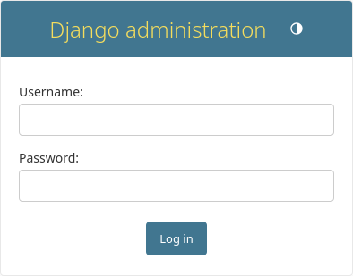
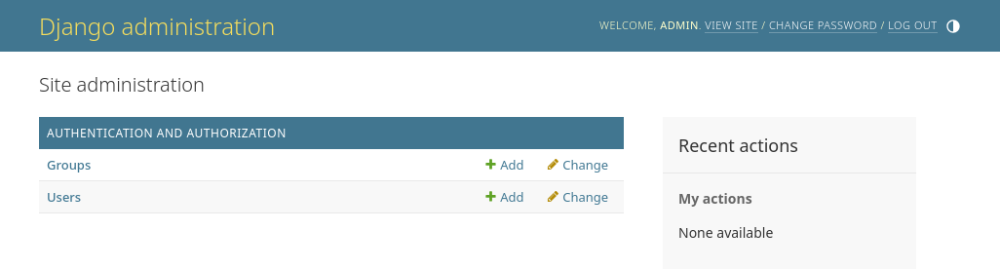

はじめての Django アプリ作成、その 2¶
このチュートリアルは チュートリアルその 1 の続きです。ここでは、データベースをセットアップして、最初のモデルを作成し、そして Django が自動的に生成してくれる管理サイトについて、簡単なイントロダクションをします。
困ったときは:
このチュートリアルの実行に問題がある場合は、FAQ の Getting Help セクションに進んでください。
Database の設定¶
それでは、 mysite/settings.py を開いてください。これは、 Django の設定を表現するモジュールレベルの変数を持つ通常の Python モジュールです。
デフォルトでは、DATABASES の設定はSQLiteを使用します。もしデータベースに不慣れであったり、Djangoを試してみたいだけの場合、これが最も簡単な選択です。SQLiteはPythonに含まれているため、データベースをサポートするために追加でインストールする必要はありません。ただし、最初の本格的なプロジェクトを始める際には、将来的なデータベースの切り替えに悩まされないよう、PostgreSQLのようなよりスケーラブルなデータベースを使用したいと思うかもしれません。
別のデータベースを使用したい場合は、データベースのカスタマイズと実行に関する詳細 を参照してください。
mysite/settings.py を編集する際、 TIME_ZONE に自分のタイムゾーンも設定します。
同じく、ファイル先頭にある INSTALLED_APPS に注意してください。これはこのDjangoインスタンスの中で有効化されているすべてのDjangoアプリケーションの名前を保持しています。アプリは複数のプロジェクトによって使用されることができますし、また、他の開発者が彼らのプロジェクトで使用するためにパッケージして配布することもできます。
デフォルトでは、 INSTALLED_APPS には以下のアプリケーションが入っています。
django.contrib.admin- 管理（admin）サイト。まもなく使いますdjango.contrib.auth- 認証システムdjango.contrib.contenttypes- コンテンツタイプフレームワークdjango.contrib.sessions- セッションフレームワークdjango.contrib.messages- メッセージフレームワークdjango.contrib.staticfiles- 静的ファイルの管理フレームワーク
これらの機能はよく使われるのでデフォルトで付属しています。
これらのアプリケーションは最低1つデータベースのテーブルを使うので、使い始める前にデータベースにテーブルを作る必要があります。以下のコマンドを実行してください:
$ python manage.py migrate
...\> py manage.py migrate
migrate コマンドは INSTALLED_APPS の設定を参照するとともに、 mysite/settings.py ファイルのデータベース設定に従って必要なすべてのデータベースのテーブルを作成します。このデータベースマイグレーションはアプリと共に配布されます (これらについては後ほどカバーします)。マイグレーションを実施するたび、メッセージを見ることになります。もしこれに興味を引かれたら、Djangoが作成したテーブルを表示するために、コマンドラインクライアントであなたのデータベースの種類に合わせて \dt (PostgreSQL)、SHOW TABLES; (MySQL)、 .tables (SQLite)、もしくは SELECT TABLE_NAME FROM USER_TABLES; (Oracle) とタイプしてみましょう。
ミニマリストのために
すでに述べたように、一般的な場合のためにデフォルトのアプリケーション群が含まれていますが、すべての人がそれを必要とするわけではありません。もしその中のどれかかすべてが必要ない場合、 migrate を実行する前に INSTALLED_APPS から適切な行をコメントアウトしたり削除しても構いません。migrate コマンドは INSTALLED_APPS のアプリのためだけに実行されます。
モデルの作成¶
これからモデルを定義します。モデルは本質的には、データベースのレイアウトと、それに付随するメタデータです。
設計思想
モデルは、手持ちのデータに対する唯一無二の決定的なソースです。モデルには自分が格納したいデータにとって必要不可欠なフィー ルドと、そのデータの挙動を収めます。 Django は DRY 則 に従っています。 Django のモデルの目的は、ただ一つの場所でデータモデルを定義し、そこから自動的にデータを取り出すことにあります。
これはマイグレーションを含みます - たとえば、Ruby On Rails と違って、マイグレーションは完全にモデルのファイルから生成されます。マイグレーションは本質的には単なる履歴です。Django はデータベーススキーマをアップデートしながら履歴を進んでいき、現在のモデルに合致させることができます。
これから開発する簡単な poll アプリケーションでは、Question と Choice の2つのモデルを作成します。Poll には question と publication date の情報があります。 Choice には選択肢のテキストと vote という2つのフィールドがあります。各 Choice は1つの Question に関連づけられています。
Django では、こうした概念を簡単な Python クラスで表現できます。 polls/models.py ファイルを以下のように編集してください:
polls/models.py¶from django.db import models
class Question(models.Model):
question_text = models.CharField(max_length=200)
pub_date = models.DateTimeField("date published")
class Choice(models.Model):
question = models.ForeignKey(Question, on_delete=models.CASCADE)
choice_text = models.CharField(max_length=200)
votes = models.IntegerField(default=0)
コードは単純明解ですね。各モデルは一つのクラスで表現され、いずれも django.db.models.Model のサブクラスです。各モデルには複数のクラス変数があり、個々のクラス変数はモデルのデータベースフィールドを表現しています。
各フィールドは Field クラスのインスタンスとして表現されています。例えば、 CharField は文字のフィールドで、 DateTimeField は日時フィールドです。こうしたクラスは、各フィールドにどのようなデータ型を記憶させるかを Django に教えます。
Field インスタンスそれぞれの名前(例: question_text や pub_date)は、機械可読なフィールド名です。このフィールド名はPythonコードで使うとともに、データベースも列の名前として使うことになります。
Field の最初の位置引数には、オプションとして人間可読なフィールド名も指定できます。このフィールド名は Django の二つの内省機能で使う他、ドキュメントとしての役割も果たします。人間可読なフィールド名を指定しない場合、 Django は機械可読な名前を使います。上の例では、 Question.pub_date にだけ人間可読なフィールド名を指定しました。モデルの他のフィールドでは、フィールドの機械可読な名前は人間可読な名前としても十分なので定義していません。
Field クラスの中には必須の引数を持つものがあります。例えば CharField には max_length を指定する必要があります。この引数はデータベーススキーマで使われる他、後で述べるバリデーションでも使われます。
Field はいくつかオプションの引数も取れます。今回の場合、 votes の default 値を 0 に設定しました。
最後に、 ForeignKey を使用してリレーションシップが定義されていることに注目してください。これは、それぞれの Choice が一つの Question に関連付けられることを Django に伝えます。 Django は 多対一、多対多、そして一対一のような一般的なデータベースリレーションシップすべてをサポートします。
モデルを有効にする¶
前述のようなほんのわずかなコードをモデルに書くだけで、 Django はたくさんの情報を知ることができます。このコードを使って、 Django は:
アプリケーションのデータベーススキーマを作成 (
CREATE TABLE文を実行) できます。QuestionやChoiceオブジェクトに Python からアクセスするためのデータベース API を作成できます。
でもその前に、 polls アプリケーションをインストールしたことをプロジェクトに教えてやる必要があります。
設計思想
Django アプリケーションは「プラガブル (pluggable)」です。アプリケーショ ンは特定の Django インストールに結び付いていないので、アプリケーションを複数のプロジェクトで使ったり、単体で配布したりできます。
アプリケーションをプロジェクトに含めるには、構成クラスへの参照を INSTALLED_APPS 設定に追加する必要があります。 PollsConfig クラスは、 polls/apps.py にあるので、ドットつなぎのパスは 'polls.apps.PollsConfig' となります。 mysite/settings.py を編集し、 INSTALLED_APPS 設定にドットつなぎのパスを追加してください。そうすると下記のようになります。
mysite/settings.py¶INSTALLED_APPS = [
"polls.apps.PollsConfig",
"django.contrib.admin",
"django.contrib.auth",
"django.contrib.contenttypes",
"django.contrib.sessions",
"django.contrib.messages",
"django.contrib.staticfiles",
]
これで Django は、 polls アプリケーションが含まれていることを認識できます。もうひとつコマンドを実行しましょう:
$ python manage.py makemigrations polls
...\> py manage.py makemigrations polls
次のようなものが表示されるはずです:
Migrations for 'polls':
polls/migrations/0001_initial.py
+ Create model Question
+ Create model Choice
makemigrations を実行することで、Djangoにモデルに変更があったこと(この場合、新しいものを作成しました)を伝え、そして変更を マイグレーション の形で保存することができました。
マイグレーションは Django がモデル (そしてデータベーススキーマでもあります) の変更を保存する方法です。マイグレーションは、ディスク上のただのファイルです。望むならば、新しいモデルのためのマイグレーションをファイル polls/migrations/0001_initial.py から読むこともできます。安心してください、Django がマイグレーションのファイルを作成するたびにそれを毎回読む必要はありません。しかし、Django が行う変更を手動で微調整したいというときのために、マイグレーションは人間可読なファイルとして設計されています。
Django には、マイグレーションをあなたの代わりに実行し、自動でデータベーススキーマを管理するためのコマンドがあります。これは migrate と呼ばれるコマンドで、この後すぐに見ていきます。しかし最初は、マイグレーションがどんなSQLを実行するのか見てみましょう。 sqlmigrate コマンドはマイグレーションの名前を引数にとってSQLを返します:
$ python manage.py sqlmigrate polls 0001
...\> py manage.py sqlmigrate polls 0001
次のような結果が表示されるはずです (読みやすくするために再フォーマットしました) :
BEGIN;
--
-- Create model Question
--
CREATE TABLE "polls_question" (
"id" bigint NOT NULL PRIMARY KEY GENERATED BY DEFAULT AS IDENTITY,
"question_text" varchar(200) NOT NULL,
"pub_date" timestamp with time zone NOT NULL
);
--
-- Create model Choice
--
CREATE TABLE "polls_choice" (
"id" bigint NOT NULL PRIMARY KEY GENERATED BY DEFAULT AS IDENTITY,
"choice_text" varchar(200) NOT NULL,
"votes" integer NOT NULL,
"question_id" bigint NOT NULL
);
ALTER TABLE "polls_choice"
ADD CONSTRAINT "polls_choice_question_id_c5b4b260_fk_polls_question_id"
FOREIGN KEY ("question_id")
REFERENCES "polls_question" ("id")
DEFERRABLE INITIALLY DEFERRED;
CREATE INDEX "polls_choice_question_id_c5b4b260" ON "polls_choice" ("question_id");
COMMIT;
以下に注意してください:
正確な出力は、使用しているデータベースによって異なります。上記の例は、 PostgreSQL の場合に生成されるものです。
テーブル名はアプリケーションの名前 (
polls) とモデルの小文字表記 のquestionとchoiceを組み合わせて自動的に生成されます。 (この挙動はオーバライドできます)主キー (primary key, ID) は自動的に追加されます (この挙動もオーバライド可能です)。
便宜上、 Django は外部キーのフィールド名に
"_id"を追加します。もちろんこの挙動もオーバライド可能です。外部キーリレーションシップは
FOREIGN KEY制約で明確化されます。DEFERRABLEの部分は気にしないでください。これはただ PostgreSQL に外部キーをトランザクション終了まで強制しないよう伝えているだけです。あなたが使用しているデータベースに合わせて、
auto_increment(MySQL)、bigint PRIMARY KEY GENERATED BY DEFAULT AS IDENTITY(PostgreSQL) もしくはinteger primary key autoincrement(SQLite) のようなデータベースに特化した型が自動的に選択され生成されます。フィールド名のクォーティング (例えば、ダブルクォートにするか、シングルクォートにするか) も同様です。sqlmigrateコマンドは実際にはデータベースにマイグレーションを実行しません。ただ、Djangoが必要としているSQLが何であるかをスクリーンに表示するだけです。これはDjangoが何をしようとしているかを確認したり、データベース管理者に変更のためのSQLスクリプトを要求されているときに役に立ちます。
もし興味があれば python manage.py check を実行することもできます; これはマイグレーションを作成したりデータベースにふれることなく、プロジェクトに何か問題がないか確認します 。
migrate を再度実行し、 モデルのテーブルをデータベースに作成しましょう。
$ python manage.py migrate
Operations to perform:
Apply all migrations: admin, auth, contenttypes, polls, sessions
Running migrations:
Rendering model states... DONE
Applying polls.0001_initial... OK
...\> py manage.py migrate
Operations to perform:
Apply all migrations: admin, auth, contenttypes, polls, sessions
Running migrations:
Rendering model states... DONE
Applying polls.0001_initial... OK
migrate コマンドはすべての適用されていないマイグレーション(Djangoはデータベース内の django_migrations と呼ばれる特別なテーブルを利用してどれが適用されているかを追跡しています)を捕捉してデータベースに対してそれを実行します - 重要なのは、モデルに対して行った変更はデータベースのスキーマに同期するということです。
マイグレーションはとても強力なツールであり、プロジェクトの発展に合わせて、モデルを変更し続けていくことができます。データベースやテーブルを削除して作り直す必要はありません - マイグレーションは、データを失うことなしにデータベースをライブでアップグレードするよう特化しています。これらについてはチュートリアルの後の部分でもっと深くカバーしますが、今は、モデルの変更を実施するための3ステップガイドを覚えておいてください:
モデルを変更する (
models.pyの中の)これらの変更のためのマイグレーションを作成するために
python manage.py makemigrationsを実行するデータベースにこれらの変更を適用するために
python manage.py migrateを実行する
マイグレーションの作成と適用のコマンドが分割されている理由は、マイグレーションをバージョン管理システムにコミットし、アプリとともに配布するためです。これによって、あなたの開発が容易になるだけでなく、他の開発者や本番環境にとって使いやすいものになります。
manage.py ユーティリティでできることについては django-admin のドキュメント を読んで下さい。
API で遊んでみる¶
さぁ、 Python 対話シェルを起動して、 Django が提供する API で遊んでみましょう。 Python シェルを起動するには、以下のコマンドを実行します:
$ python manage.py shell
...\> py manage.py shell
"python "とタイプするのではなく、これを使っています。なぜなら、 manage.py は DJANGO_SETTINGS_MODULE 環境変数を設定しているからです。
シェルに入ったら データベース API の世界を探検してみましょう:
>>> from polls.models import Choice, Question # Import the model classes we just wrote.
# No questions are in the system yet.
>>> Question.objects.all()
<QuerySet []>
# Create a new Question.
# Support for time zones is enabled in the default settings file, so
# Django expects a datetime with tzinfo for pub_date. Use timezone.now()
# instead of datetime.datetime.now() and it will do the right thing.
>>> from django.utils import timezone
>>> q = Question(question_text="What's new?", pub_date=timezone.now())
# Save the object into the database. You have to call save() explicitly.
>>> q.save()
# Now it has an ID.
>>> q.id
1
# Access model field values via Python attributes.
>>> q.question_text
"What's new?"
>>> q.pub_date
datetime.datetime(2012, 2, 26, 13, 0, 0, 775217, tzinfo=datetime.timezone.utc)
# Change values by changing the attributes, then calling save().
>>> q.question_text = "What's up?"
>>> q.save()
# objects.all() displays all the questions in the database.
>>> Question.objects.all()
<QuerySet [<Question: Question object (1)>]>
ちょっと待ってください。 <Question: Question object (1)> は、このオブジェクトの表現としてまったく役に立ちません。(polls/models.py ファイル内にある) Question モデルを編集してこれを修正しましょう。 __str__() メソッドを Question と Choice の両方に追加します。
polls/models.py¶from django.db import models
class Question(models.Model):
# ...
def __str__(self):
return self.question_text
class Choice(models.Model):
# ...
def __str__(self):
return self.choice_text
あなた自身のインタラクティブシェルでの表示での利便性のためだけではなく、Djangoの自動生成adminでオブジェクトの表現として使用されるという理由からも __str__() メソッドをモデルに追加することは重要です。
モデルクラスにクラスメソッドを追加してみましょう:
polls/models.py¶import datetime
from django.db import models
from django.utils import timezone
class Question(models.Model):
# ...
def was_published_recently(self):
return self.pub_date >= timezone.now() - datetime.timedelta(days=1)
import datetime と from django.utils import timezone を追加したことに注意してください。これは、 Python の 標準モジュール datetime と Django のタイムゾーン関連ユーティリティの django.utils.timezone を参照するためです。 Python でのタイムゾーンの取り扱いに不慣れな場合は、タイムゾーンサポートドキュメント を参照してください。
変更を保存して、もう一度 python manage.py shell を実行して新しい Python 対話シェルを始めましょう:
>>> from polls.models import Choice, Question
# Make sure our __str__() addition worked.
>>> Question.objects.all()
<QuerySet [<Question: What's up?>]>
# Django provides a rich database lookup API that's entirely driven by
# keyword arguments.
>>> Question.objects.filter(id=1)
<QuerySet [<Question: What's up?>]>
>>> Question.objects.filter(question_text__startswith="What")
<QuerySet [<Question: What's up?>]>
# Get the question that was published this year.
>>> from django.utils import timezone
>>> current_year = timezone.now().year
>>> Question.objects.get(pub_date__year=current_year)
<Question: What's up?>
# Request an ID that doesn't exist, this will raise an exception.
>>> Question.objects.get(id=2)
Traceback (most recent call last):
...
DoesNotExist: Question matching query does not exist.
# Lookup by a primary key is the most common case, so Django provides a
# shortcut for primary-key exact lookups.
# The following is identical to Question.objects.get(id=1).
>>> Question.objects.get(pk=1)
<Question: What's up?>
# Make sure our custom method worked.
>>> q = Question.objects.get(pk=1)
>>> q.was_published_recently()
True
# Give the Question a couple of Choices. The create call constructs a new
# Choice object, does the INSERT statement, adds the choice to the set
# of available choices and returns the new Choice object. Django creates
# a set (defined as "choice_set") to hold the "other side" of a ForeignKey
# relation (e.g. a question's choice) which can be accessed via the API.
>>> q = Question.objects.get(pk=1)
# Display any choices from the related object set -- none so far.
>>> q.choice_set.all()
<QuerySet []>
# Create three choices.
>>> q.choice_set.create(choice_text="Not much", votes=0)
<Choice: Not much>
>>> q.choice_set.create(choice_text="The sky", votes=0)
<Choice: The sky>
>>> c = q.choice_set.create(choice_text="Just hacking again", votes=0)
# Choice objects have API access to their related Question objects.
>>> c.question
<Question: What's up?>
# And vice versa: Question objects get access to Choice objects.
>>> q.choice_set.all()
<QuerySet [<Choice: Not much>, <Choice: The sky>, <Choice: Just hacking again>]>
>>> q.choice_set.count()
3
# The API automatically follows relationships as far as you need.
# Use double underscores to separate relationships.
# This works as many levels deep as you want; there's no limit.
# Find all Choices for any question whose pub_date is in this year
# (reusing the 'current_year' variable we created above).
>>> Choice.objects.filter(question__pub_date__year=current_year)
<QuerySet [<Choice: Not much>, <Choice: The sky>, <Choice: Just hacking again>]>
# Let's delete one of the choices. Use delete() for that.
>>> c = q.choice_set.filter(choice_text__startswith="Just hacking")
>>> c.delete()
モデルのリレーションについては リレーション先オブジェクトにアクセスする を参照してください。 API を通じた、フィールドルックアップのためのダブルアンダースコアの使い方は フィールドルックアップ を参照してください。データーベース API の詳細は データベース API リファレンス を参照してください。
Django Adminの紹介¶
設計思想
あなたのスタッフや顧客のためのコンテンツ追加、変更そして削除のための管理サイトの生成は、創造性を要求されない退屈な仕事です。そのため、Djangoはモデルのための管理インタフェース群の生成を完全に自動化します。
Django はニュースルーム環境で開発されました。ニュースルーム環境では、 「コンテンツの作成者 (content publisher)」と「公開 (public) 」サイトをきわめて明確に区別しています。サイト管理者は新たな話題やイベント、 スポーツのスコアなどの入力にシステムを使い、コンテンツは公開用サイト上で表示されます。 Django は、サイト管理者向けの一元化されたコンテンツ編集インタフェースを提供しています。
admin はサイトの訪問者でなく、サイト管理者に使われることを意図しています。
管理ユーザーを作成する¶
まず最初に私達はadminサイトにログインできるユーザーを作成する必要があります。下記のコマンドを実行します:
$ python manage.py createsuperuser
...\> py manage.py createsuperuser
好きなユーザー名を入力しEnterを押してください。
Username: admin
希望するemailアドレスを入力するよう促されます:
Email address: admin@example.com
最後のステップはパスワードの入力です。2回目のパスワードが1回目と同じことを確認するため、パスワードの入力を2回求められます。
Password: **********
Password (again): *********
Superuser created successfully.
開発サーバーの起動¶
Django adminサイトはデフォルトで有効化されます。開発サーバーを起動して探索を始めましょう。
もしサーバーが起動していなかったら、このようにして起動しましょう:
$ python manage.py runserver
...\> py manage.py runserver
次はブラウザを起動して、ローカルドメインの “/admin/” 、つまり http://127.0.0.1:8000/admin/ にアクセスします。以下のような admin のログイン画面が表示されるはずです:
デフォルトでは 翻訳 がオンになっているので、 LANGUAGE_CODE を設定すると、与えられた言語でログイン画面が表示されるようになります(Django に適切な翻訳があれば)。
admin サイトに入る¶
今回は、前のステップで作成したスーパーユーザーのアカウントでログインしてみましょう。 Django admin のインデックスページが表示されるはずです:
いくつかのタイプの編集可能なコンテンツがあるはずです（groups と users）。これらは Django に含まれる認証フレームワーク django.contrib.auth によって提供されます。
Poll アプリを admin 上で編集できるようにする¶
ところで、 polls アプリはどこにあるんでしょう？ admin のインデックスページを見ても表示されていませんね。
やるべきことは1つです: Question オブジェクトがadmin インタフェースを持つということを、adminに伝える必要があります。これを行うために、ファイル polls/admin.py を開いてこのように編集しましょう:
polls/admin.py¶from django.contrib import admin
from .models import Question
admin.site.register(Question)
admin の機能を探究してみる¶
私たちが Question を登録したので、 Django は admin インデックスページにこれを表示すべきだということを知っています:
"Questions" をクリックしましょう。questions のための "change list" ページが表示されます。このページにはデータベース中のすべての question が表示され、あなたはその中のひとつを選んで変更することができます。ここには私たちが以前作成した "What's UP?" question もあります:

「What’s up?」をクリックして編集してみましょう:

以下の点に注意してください:
フォームは
Questionモデルから自動的に生成されます。モデルのフィールドの型 (
DateTimeField、CharFieldなど) はそれぞれ異なる HTML 入力ウィジェットと対応しています。各種のフィールドは、自分自身を Django admin サイトでどう表示するか知っています。各
DateTimeFieldは JavaScript ショートカットがついています。日付 (dates) のカラムには「今日 (today)」 へのショートカットとカレンダーポップアップボタンがあります。 時刻 (times) には「現在 (now)」へのショートカットと、よく入力される時刻のリストを表示するポップアップボタンがあります。
ページの末尾の部分には操作ボタンがいくつか表示されています:
保存 (Save) – 変更を保存して、このモデルのチェンジリストのページに戻ります。
保存して編集を続ける (Save and continue editing) – 変更を保存して、このオブジェクトの編集ページをリロードします。
保存してもう一つ追加 (Save and add another) – 変更を保存して、このモデルのオブジェクトを新規追加するための空の編集ページをロードします。
削除 (Delete) – 削除確認ページを表示します。
もし「Date published」の値があなたが以前 チュートリアルその1 で作成した questionと一致しないのであれば、それはおそらくあなたが TIME_ZONE で正しい値を設定することを忘れていたことを意味します。これを変更して、ページをリロードし、正しい値が表示されるか確認してください。
「今日」や「現在」ショートカットをクリックして、「Date published」を変更してみましょう。変更したら、「保存して編集を続ける」を押します。次に、右上に ある「履歴 (History)」をクリックしてみましょう。ユーザが管理サイト上でオブジェクトに対して行った変更履歴の全てを、変更時刻と変更を行ったユーザ名付きでリストにしたページが表示されます:

モデルの API や admin サイトに慣れてきたら、 チュートリアルその3 を読んで、 polls アプリにビューをさらに追加する方法を学習しましょう。
Last update:
1月 22, 2025